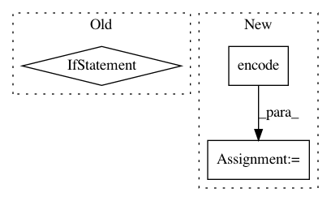

d97188ee62bc0627235578485c5df7d3245fa1ed,example6.py,,,#,14
Before Change
316, 245, 232, 175, 149, 263, 387, 283, 391, 211, 396, 352, 345, 258, 253, 163, 140, 293, 194, 342, 161, 358,
271, 156, 260, 384, 153, 277, 214]
laws_str = [str(x) for x in laws]
def get_encodes(x):
After Change
with open("README.md") as fp:
data = [v for v in fp if v.strip()]
bc = BertClient()
list_vec = bc.encode(data)
list_label = [0 for _ in data] // a dummy list of all-zero labels
// write tfrecords
with tf.python_io.TFRecordWriter("tmp.tfrecord") as writer:
def create_float_feature(values):
return tf.train.Feature(float_list=tf.train.FloatList(value=values))
def create_int_feature(values):
return tf.train.Feature(int64_list=tf.train.Int64List(value=list(values)))
for (vec, label) in zip(list_vec, list_label):
features = {"features": create_float_feature(vec), "labels": create_int_feature([label])}
tf_example = tf.train.Example(features=tf.train.Features(feature=features))
writer.write(tf_example.SerializeToString())
// read tfrecords and build dataset from it
num_hidden_unit = 768
def _decode_record(record):
In pattern: SUPERPATTERN
Frequency: 3
Non-data size: 3
Instances
Project Name: hanxiao/bert-as-service
Commit Name: d97188ee62bc0627235578485c5df7d3245fa1ed
Time: 2018-12-02
Author: hanhxiao@tencent.com
File Name: example6.py
Class Name:
Method Name:
Project Name: ray-project/ray
Commit Name: ef498e8aa5cdfe09247d9c9efc7ef636378165c2
Time: 2020-05-15
Author: ed.nmi.oakes@gmail.com
File Name: python/ray/serve/policy.py
Class Name: PowerOfTwoPolicy
Method Name: flush
Project Name: NifTK/NiftyNet
Commit Name: 200e3be0929599459ee5d1100b3076b9188ecf25
Time: 2017-10-26
Author: wenqi.li@ucl.ac.uk
File Name: tests/resampler_grid_warper_test.py
Class Name:
Method Name: